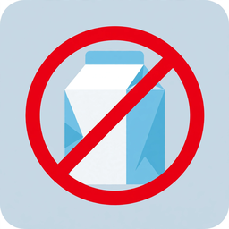

Dairy Checker
Scan a product barcode and find out if it contains dairy.
Point the camera at the barcode…
— or type the number —
Fill the screen with the label, straight-on, good light.
AI label photos are sent to the reader service and deleted right after reading. The offline reader and barcode lookups never send photos.
Data from Open Food Facts. Labels can change — always check the package.
My Profile
“May contain” warnings
Saved on this phone only — no account, nothing leaves your phone.